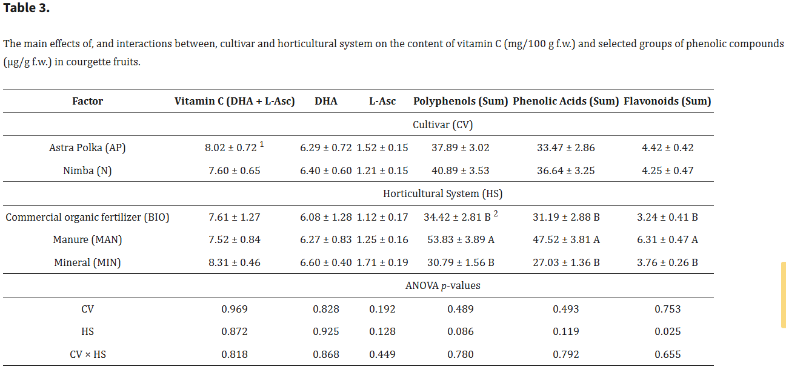
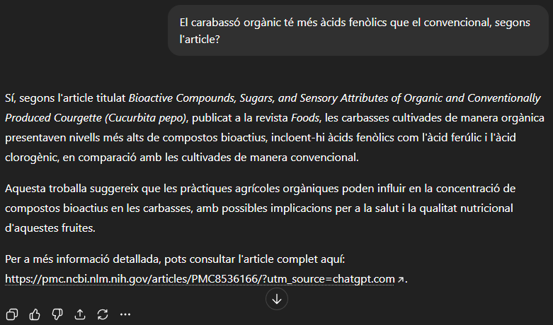

He trobat diferents articles científics que estudien el carbassó i els trobareu a continuació en format APA7. APA7 que és una forma d'escriure un article científic.
ChatGPT-5 va compartir amb mi un article sobre quin tenia més vitamina C el carabassó convencional o orgànic. Vaig buscar a l'article i em va sortir la taula que hi ha a continuació:
En aquesta taula observem com el carabassó convencional és una mica millor que el carabassó orgànic. En canvi, quan li vaig preguntar a ChatGPT-5 segons l'article quin era millor em va dir el següent:
Deia que l'estudi no havia trobat la diferència significativa en el contingut de la vitamina C, però com ja hem vist abans a la taula veiem que sí que detalla les diferències.
___________________________________________________________________________________________________________________________________________________________________________